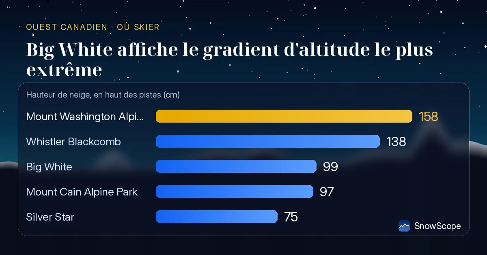

Big White affiche le gradient d'altitude le plus extrême : 68 cm au sommet
Ce gradient vertical radical, mesuré le 15 novembre, reflète les régimes de précipitations du début de saison régis par le niveau de congélation—l'altitude seuil où la température de l'air passe sous zéro et les précipitations tombent sous forme de neige plutôt que de pluie.
Consultez les prévisions neige en temps réel pour Big White sur l'application SnowScopeHauteurs de neige, alertes poudreuse et carte 3D, gratuitement.
L'extrême division d'altitude
La distribution de neige à Big White le 15 novembre raconte une histoire brute de précipitations dépendantes de l'altitude. Au sommet (2 271 m), le manteau neigeux atteint 68 cm ; à la base (1 512 m), il disparaît complètement.
D'un point de vue hydrologique, cette concentration importe profondément. Le stockage d'eau douce de la région est confiné aux hautes altitudes, loin des bassins versants inférieurs et des réservoirs qui dépendront éventuellement de la fonte printanière de cette neige. Une montagne ainsi divisée verticalement représente de l'eau stockée sous une forme qui ne peut pas alimenter rapidement les systèmes des basses altitudes.
| Station | Hauteur de neige | Neige fraîche, 72 h | Attendu, jours suivants | Sommet |
|---|---|---|---|---|
| Mount Washington Alpine Resort | 158 cm | 9 cm | 11 cm | 1 569 m |
| Whistler Blackcomb | 138 cm | 82 cm | 13 cm | 2 259 m |
| Big White | 99 cm | 4 cm | 4 cm | 2 271 m |
| Mount Cain Alpine Park | 97 cm | 66 cm | 9 cm | 1 616 m |
| Silver Star | 75 cm | 5 cm | 3 cm | 1 886 m |

Situation régionale
Dans l'Ouest canadien, 41 stations sur 57 avaient de la neige mesurable le 15 novembre, la zone couverte de neige totale de la région atteignant 253 880 km². Whistler Blackcomb domine régionalement avec 138 cm sur ses pentes supérieures ; Mount Washington Alpine Resort atteint 158 cm—tous deux des volumes nettement plus importants que la moyenne de 99 cm de Big White.
Pourtant, aucun de ces concurrents ne présente la caractéristique définissante de Big White : une montagne inférieure dégagée sous des pentes supérieures bien enneigées. La ségrégation verticale de la neige ici constitue un motif distinctif, que peu de stations de la région présentent actuellement.
Pourquoi le niveau de congélation crée cette division
Le niveau de congélation—l'altitude où la température de l'air franchit 0 °C—détermine si les précipitations tombent sous forme de neige ou de pluie. Le 15 novembre, il se situait entre 1 500 et 1 880 m à Big White, ce qui signifie que la base et une grande partie de la mi-montagne restaient au-dessus du point de congélation tandis que les pentes supérieures restaient assez froides pour préserver la neige solide.
Cette limite régissait 1 cm de neige fraîche tombée en 24 heures jusqu'au 15 novembre, ainsi que les 4 cm qui se sont accumulés au cours des 72 heures précédentes. Les deux tempêtes ont déposé leur neige uniquement où les températures de l'air pouvaient la maintenir sous forme gelée.
Prévision : la date seuil s'approche
Au cours des sept prochains jours, Big White recevra approximativement 4–5 cm de neige supplémentaire sur la montagne, les chutes les plus importantes étant attendues le 16 novembre. Bien plus importante est l'évolution prévue du niveau de congélation.
Le 18 novembre, SnowScope prédit que le niveau de congélation plongera entre 210 et 380 m—bien au-dessous de la base à 1 512 m. Cette baisse dramatique signifie que la neige tombera sur toute la montagne pour la première fois de la saison, comblant éventuellement le vide actuel entre la base et le sommet. Jusqu'à ce que cette transition se produise, les skieurs ne trouveront une couverture fiable qu'aux altitudes supérieures, tandis que la couche mince de mi-montagne reste vulnérable à l'érosion éolienne et à la sublimation.
Lire le terrain fin du début de saison
La concentration de neige en altitude signifie que les pentes inférieures et de mi-montagne restent largement dégagées ou peu couvertes. Les manteaux neigeux du début de saison sont caractéristiquement minces, et les surfaces exposées au vent et aux apports solaires peuvent rapidement sublimer ou se compresser davantage.
La couverture de neige actuellement présente offre peu de protection contre l'environnement montagneux. Des rochers et de la végétation se trouvent probablement près de la surface en de nombreux endroits sous la mi-montagne (1 891 m). Avant de vous aventurer dans des pentes raides vierges aux altitudes plus élevées, consultez le bulletin officiel d'avalanche de votre région pour évaluer le risque de plaque de vent et la stabilité des couches dans les conditions actuelles.
Conseils aux skieurs
- Concentrez votre journée de ski sur la zone du sommet (2 271 m) où 68 cm de neige modélisée offre les conditions de virage les plus fiables ; attendez-vous à des pentes dégagées sous la mi-montagne (1 891 m).
- Notez le 18 novembre comme date seuil : la baisse prévue du niveau de congélation ce jour-là apportera de la neige aux altitudes inférieures et altérera fondamentalement l'accessibilité de la montagne.
- Traitez tous les terrains sous 1 891 m comme présentant un risque rocheux ; la neige mince dissimule les obstacles et offre peu de protection.
- Surveillez les réactions de gel-dégel sur les aspects exposés ; la neige mince de mi-montagne répond dramatiquement à de faibles variations de température en l'espace d'une journée.
- Avant de vous aventurer dans des pentes raides vierges aux altitudes plus élevées, consultez le bulletin officiel d'avalanche de votre région pour évaluer le risque de plaque de vent et la stabilité des couches dans les conditions actuelles.
À propos de ces chiffres
Les hauteurs de neige des stations sont la neige la plus épaisse sur le haut du domaine à la date indiquée ; ce sont des estimations pour une zone, pas une mesure en un point. Les prévisions peuvent changer. Consultez toujours le bulletin d'avalanche officiel avant le hors-piste.
Bulletins d'avalanche officiels: Avalanche Canada
Citer ce bulletin
Pour la recherche, l'enseignement ou la presse : chiffres et graphiques réutilisables librement sous CC BY 4.0 avec cette citation.
SnowScope (2026), Big White affiche le gradient d'altitude le plus extrême : 68 cm au sommet, https://snowscope.app/blog/fr/2026/11/western-canada-big-white-snow-depth-today-15-november-2026.html, consulté le 2026-11-15
SnowScope (Atlas Labs). (2026, November 15). Big White affiche le gradient d'altitude le plus extrême : 68 cm au sommet. SnowScope snow reports. https://snowscope.app/blog/fr/2026/11/western-canada-big-white-snow-depth-today-15-november-2026.html
BibTeX
@misc{snowscope2026westerncanadabigwhitesno,
author = {{SnowScope (Atlas Labs)}},
title = {Big White affiche le gradient d'altitude le plus extrême : 68 cm au sommet},
year = {2026},
month = nov,
howpublished = {\url{https://snowscope.app/blog/fr/2026/11/western-canada-big-white-snow-depth-today-15-november-2026.html}},
note = {Published 2026-11-15 18:22 UTC; accessed 2026-11-15}
}· CC BY 4.0 · Méthodes, données et outils →
Big White : neige et température selon l'altitude, cet hiver vs l'hiver dernier (outils) →
Suivre Big White
Gratuit : un message quand la neige arrive, et la météo chaque matin.
Autres bulletins neige

Whistler Blackcomb a enregistré 76 cm de neige fraîche au cours des dernières 72 heures, et Mount Cain Alpine Park a également reçu 64 cm, en date du 16 novembre 2026.

Prévisions Canada occidental : 90 cm de neige nouvelle à Mount Washington au cours des deux prochaines semaines, avec 70 cm attendus fin novembre et début décembre.